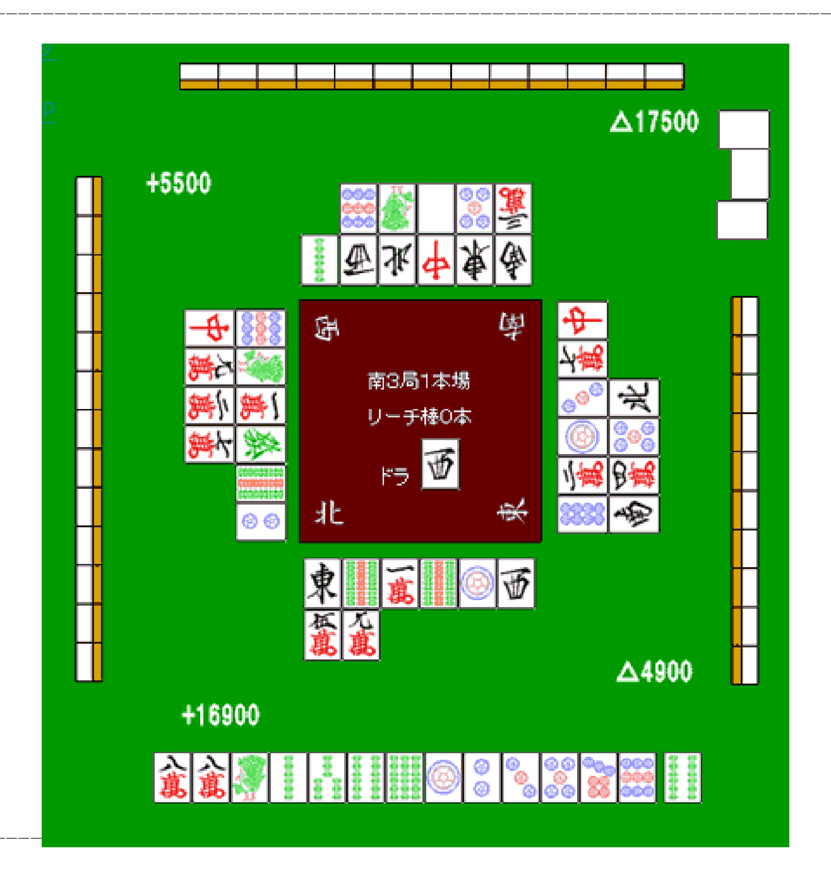
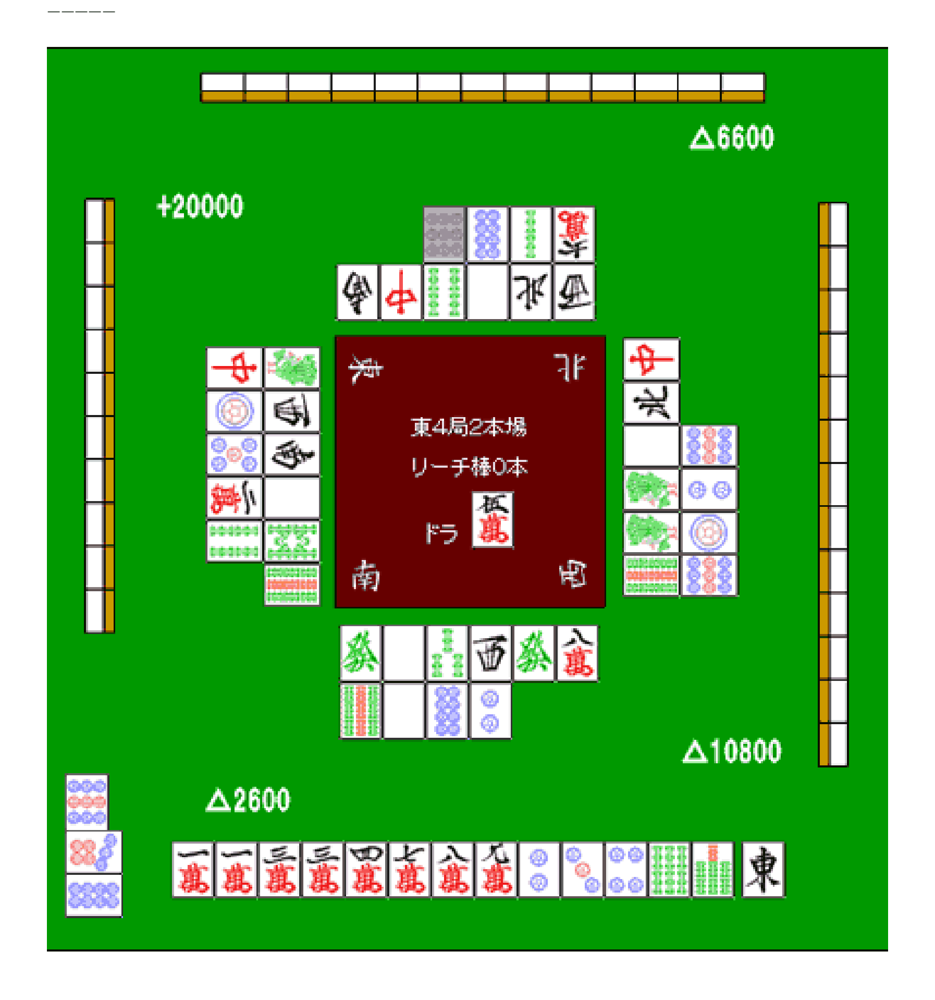
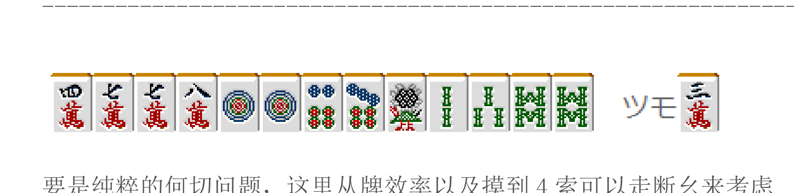
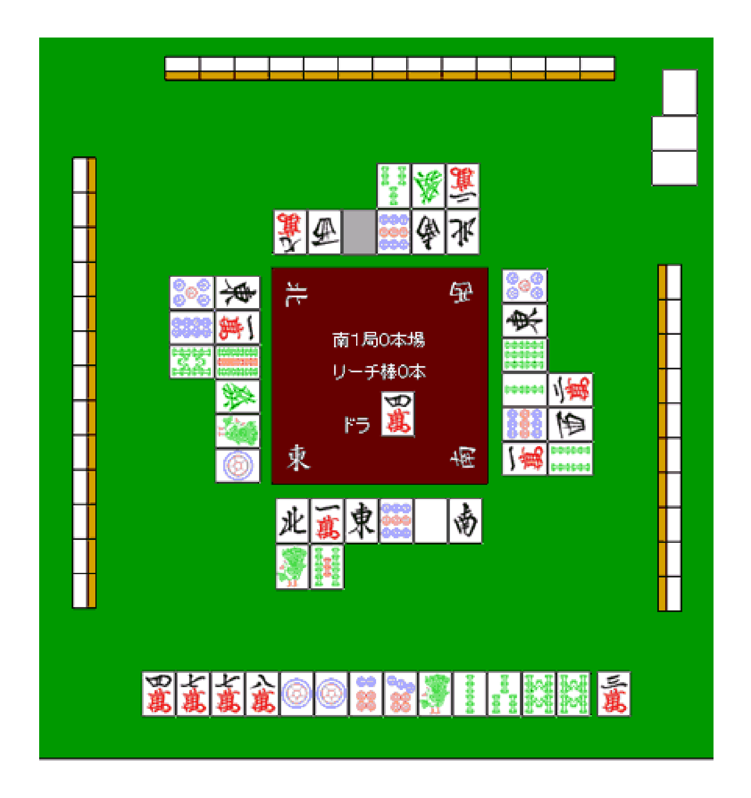

防守12—扣牌（2）
79 博客 · 中文 PDF · 第 217–220 页
译文与整理说明
原作者文字保留；218限定独立结论与七条非原文限制同时展示。217图与既有非原文注成对复用，219限定条件论证及220完整独审继承；原needs-repair/uncertain不改。
防守12—扣牌（2） p.217
扣牌2： 我们来看看扣牌的具体例子。 ------------------------------------------------------------------------------------下家染手 -------------------------------------------------------------------------------p.217

完整牌例文字与牌编码
牌码：m=万，p=饼，s=索；1z=东、2z=南、3z=西、4z=北、5z=白、6z=发、7z=中。可辨认的明牌中无赤五。 中央文字：南3局1本场，立直棒0根。座位：下方北家、右方东家、上方南家、左方西家；东家为庄家。中央“ドラ”栏显示西（3z），画面未注明该栏为宝牌还是宝牌指示牌。 画面显示值：北家+16900，东家△4900，南家△17500，西家+5500。 北家手牌从左至右：8m 8m 1s 2s 3s 6s 8s 1p 2p 3p 5p 7p 9p；右侧分开的摸牌为6s。其余三家的暗手牌背面朝外，牌种未知（画面可见南家13张、西家13张、东家10张）。 北家舍牌，按其自身视角逐行从左至右：第一行1z 9s 1m 9s 1p 3z；第二行万子（数字未辨清） 9m。 东家舍牌，按其自身视角逐行从左至右（画面中先读靠中央的一列，各列自下向上）：第一行8p 2m 1p 3p 7m 7z；第二行2z 9m 5p 4z。右上角副露为碰5z 5z 5z，中间一张横置，来自对家西家。 南家舍牌，按其自身视角逐行从左至右（画面中先读靠中央的一行，自右向左）：第一行2z 1z 7z 4z 3z 2s；第二行3m 5p 5z 1s 9p。 西家舍牌，按其自身视角逐行从左至右（画面中先读靠中央的一列，自上向下）：第一行9p 1s 1m 6z 9s 2p；第二行7z 万子（数字未辨清）2m 6m。
----- p.217
扣牌很多时候都是在下家染手时进行的。 这个例子，很明显下家是索子的一色手。 p.217
第 217 页 共 340 页 p.217
而且，他现在是亲家，自己在南场是TOP。 现在亲家应该还没有听牌吧，这个时候就应该把索子扣住了。 自己虽然是一向听，但是是无役的愚型。 即使听牌也是很不想切掉索子的。 虽然切饼子维持一向听也是一种打法。 但是9 饼有两家切掉了，以防有人立直是应该留下的。 这里应该拆掉8 万的对子，把索子紧紧扣住 施行让亲家未听下庄的战术。【审校注（非原文）：图中北家舍牌第二行第一张及西家舍牌第二行第二张均为万子，数字未辨清。西家该数字不影响本段亲家染索、南场领先、无役愚形一向听、留两家切过的9饼、拆8万对子扣索及争取亲家未听下庄的六项论证；北家第一张的未知不妨碍总体扣牌说明。两处未知限制精确牌谱复原，不能据此确定相关万子的精确可见张数、余张、进张和安全度。原文“现在亲家应该还没有听牌吧”为推测，扣索是战术意图，不证明对手暗手、实际结局、打法绝对安全或最优。】 ------------------------------------------------------------------------------------后付的字牌 ------------------------------------------------------------------------------------ p.218

完整牌例文字与牌编码
牌桌为东4局2本场，立直棒0本；图面中央标签为“ドラ：5m”，5m非赤；仅据该标签未确认它是宝牌本身还是指示牌。画面下方为南家，左方为东家，右方为西家，上方为北家。画面显示的点数增减分别为东家+20000、南家△2600、西家△10800、北家△6600。 南家手牌从左至右为11334789m 234p ?s7s（?s表示首张索子点数未知；原稿记为6s，尚未核实），最右侧新摸入1z（东）。南家牌河从靠中心的一排起、自左向右为：6z（发）、5z（白）、3s、3z（西）、6z（发）、8m；第二排为9s、5z（白）、8p、2p。 东家副露789p，从北家吃入9p；画面中从上到下为转向的9p、7p、8p。东家牌河从靠中心的一列起、自上向下为：1s、第2张黑字风牌字样不清、第3张黑字风牌字样不清、5z（白）、第5张索子点数不清、9s；外侧一列自上向下为7z（中）、1p、5p、第10张万子点数不清、第11张索子点数不清。5p为普通五饼，非赤五。 西家牌河从靠中心的一列起、自下向上为：9s、1s、1s、5z（白）、4z（北）、7z（中）；外侧一列自下向上为9p、1p、2p、9p。 北家牌河从靠中心的一排起、自右向左为：第1张黑字风牌字样不清、4z（北）、5z（白）、4s、7z（中）、第6张黑字风牌字样不清；外侧一排自右向左为第7张万子点数不清、2s、8p、9p。末张9p灰显，对应东家吃入的牌。北家13张、东家10张、西家13张牌背可见，暗手牌面不可见。南家手牌原稿所记67s中的第一张6s未能由独审确认，仍为未确认牌；不据猜测改成其它牌码。
【审校限制（非原文）1/7】本次一致性结论只针对给出的218候选中首张索子改为?s及原独审未知项的保留；原稿所记6s只能作为未核实的历史记法。p.218
【审校限制（非原文）2/7】展示作者论证时须同时展示未知项及其影响：未知风牌限制东牌可见数量和东对判断，未知数牌及暗手限制对其他役种的复核。p.218
【审校限制（非原文）3/7】“可能性很低”和“只可能是双东”保留原词，但须明确归为作者根据舍牌作出的判断；现有证据不能独立证实概率、唯一役种或实际双东。p.218
【审校限制（非原文）4/7】原文称对手亲家；图面座位和局况可供条件性理解，但本次不认证实际庄家身份、暗手、听牌、打点、最优选择或结果。p.218
【审校限制（非原文）5/7】第218页标题前的拆8万对子、扣索子和留9饼属于前例；标题后的目标图及摸东论述属于新例。第217页图与其独立限制注未重审。p.218
【审校限制（非原文）6/7】ドラ标签的宝牌或指示牌语义未确认；立直棒0本不能证明此前从未有人立直。p.218
【审校限制（非原文）7/7】已比较所给218原页、目标裁图、源图和相关文字，并参考217衔接文字；这不是对217图、219或220的重审，也不是整页通过认证。p.218
亲家用两面进行了副露，这个时候摸到了东。 我觉得这张东是绝对应该扣住的。 从亲家副露来看，有可能是混一色、一气、789 三色、全带 但是这些可能性很低，从场上的舍牌来看只可能是双东了。 p.218
第 218 页 共 340 页 p.218
这里切1 万，千万不要切东。博形听也好，弃和也好。 总之只能从这两者之间选择。 BOOM= =，一下子把东打出去的话就太勉强了。 切不得的东西就不要切。 要是再让TOP 的亲家继续扩大优势的话就很不妙了。这里心中要有将扣牌进行到底的觉悟。 ------------------------------------------------------------------------------------攻守兼备的扣牌 ------------------------------------------------------------------------------- p.219

完整牌例文字与牌编码
手牌从左至右为4m、7m、7m、8m、1p、1p、6p、7p、1s、2s、3s、8s、8s；右侧标有「ツモ」，摸入3m。m为万，p为饼，s为索；1s为鸟图案。可见牌中没有赤五。
要是纯粹的何切问题，这里从牌效率以及摸到4 索可以走断幺来考虑 切1 饼是绝对的答案。 但是，这样的情况怎么样呢？ p.219

完整牌例文字与牌编码
牌桌中央显示「南1局0本場」「リーチ棒0本」，「ドラ」旁显示4m。自家在下方，为东家；右侧为南家，上方为西家，左侧为北家。自家手牌从左至右为4m、7m、7m、8m、1p、1p、6p、7p、1s、2s、3s、8s、8s，右侧另置摸入的3m。 自家舍牌从左至右，第一行依次为北4z、1m、东1z、9p、白5z、南2z；第二行依次为1s、7s。南家舍牌靠中央的一列由下向上依次为1m、9p、2s、6s、东1z、5p；外一列由下向上依次为4s、西3z、2m。西家舍牌靠中央的一行由右向左，第1张为北4z，第2张为字牌，第3张为9p，第4格为灰色空位，第5张为西3z，第6张为万子；外一行由右向左依次为2m、发6z、3s。北家舍牌靠中央的一列由上向下依次为东1z、1m、9s、发6z、1s、1p；外一列由上向下依次为5p、8p、8s。 右上角南家副露白5z、白5z、白5z：上端一张竖向，其余两张横向；按南家的视角，横置牌位于该组右端，表示从西家碰入。两张可见的5p均为普通5p，未见赤五。西家13张、北家13张、南家10张牌背可见，暗手牌面仍未知；各家可见河牌未见相对该家正常方向横置的立直牌。z牌代码中，1z为东、2z为南、3z为西、4z为北、5z为白、6z为发。
下家的副露听牌与否以及打点多少都还不清楚。 但是切掉1 饼的话，不能无视下家会吃得概率。 p.219
第 219 页 共 340 页 p.219
虽然下家吃自己不会损失点数。 点数是没损失，不过他就距离和牌又进了一步。 自己失去亲家的可能性就变高了。 与其考虑这个能包含宝牌以及断幺的可能性，我觉得先注意一下下家的副露会比较好。 切8 索的话，下家应该不会有什么动静。 （待续） p.220